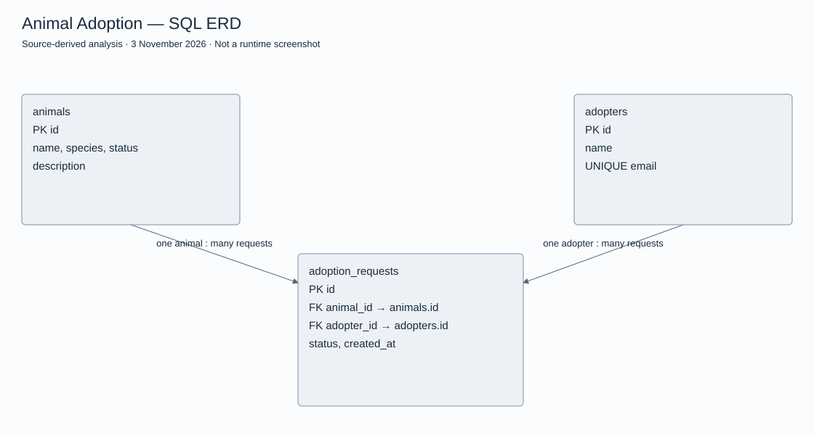

กรณีศึกษาออกแบบระบบ
ระบบหาบ้านให้สัตว์
ออกแบบระบบเชื่อมต่อข้อมูลสัตว์กับผู้สนใจรับเลี้ยง
Project overview
ออกแบบระบบเชื่อมต่อข้อมูลสัตว์กับผู้สนใจรับเลี้ยง
My responsibilities
วิเคราะห์ผู้ใช้และกระบวนการยื่นคำขอรับเลี้ยง
System workflow
- ค้นหาสัตว์
- ดูรายละเอียด
- ยื่นคำขอ
- ตรวจสอบ
- อนุมัติ
Implementation scope
- Visitor
- Adopter
- Shelter
- Admin
Results & deliverables
SQL schema ของระบบรับเลี้ยงสัตว์และเอกสารวิเคราะห์ใน Repository งานรายวิชา
Source-derived relational model
อ้างอิง animal-adoption/schema.sql: animals และ adopters มี Primary Key ของตนเอง ส่วน adoption_requests อ้าง animal_id และ adopter_id ด้วย Foreign Key เป็นการออกแบบ Schema ไม่ใช่หลักฐานว่า Backend หรือฐานข้อมูล Production เปิดใช้งานแล้ว
